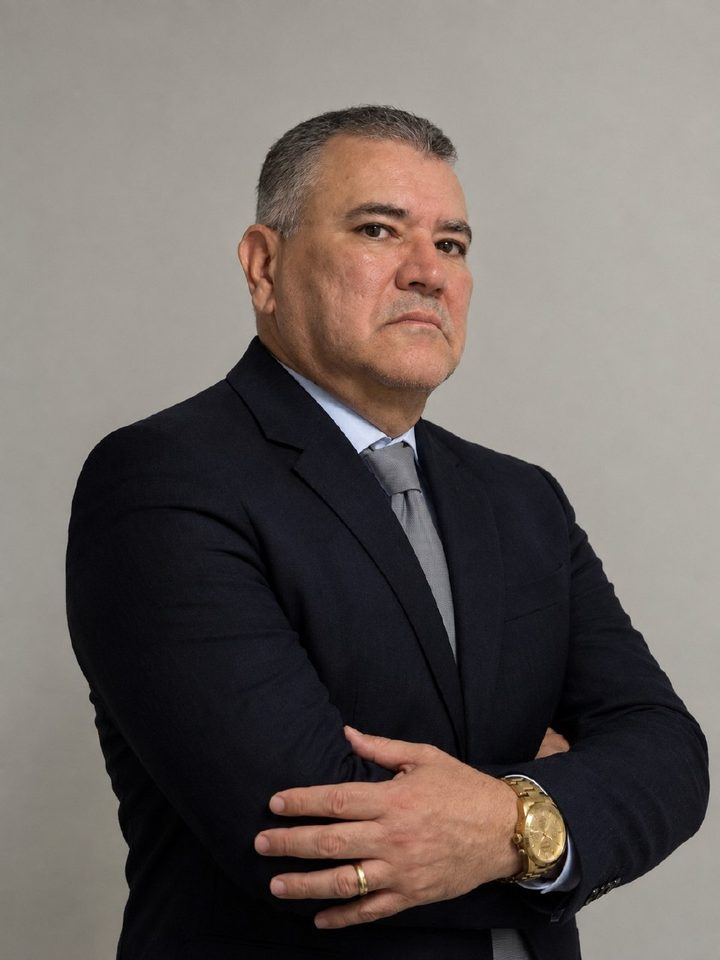

Direito Trabalhista
Relações de trabalho, verbas rescisórias, horas extras, assédio e disputas entre empregado e empregador.
Sociedade de Advogados em Salvador/BA
Atuação jurídica estratégica, próxima e comprometida com soluções seguras para cada história — em Direito Trabalhista, Previdenciário, do Consumidor, Cível, Empresarial e Administrativo.
O escritório
Na WA Soares Sociedade de Advogados, cada demanda é conduzida com atenção, clareza e seriedade. Unimos experiência e atualização constante para oferecer uma advocacia confiável e personalizada em Salvador e região.
Nossa atuação
Orientação jurídica qualificada para pessoas, famílias e empresas.
Relações de trabalho, verbas rescisórias, horas extras, assédio e disputas entre empregado e empregador.
Aposentadorias, pensões, auxílio-doença, BPC/LOAS e demais benefícios junto ao INSS.
Cobranças indevidas, negativação, relações com bancos e empresas, e defesa dos seus direitos.
Contratos, indenizações, responsabilidade civil e questões patrimoniais.
Estruturação de negócios, contratos comerciais e questões societárias.
Servidores públicos, concursos, licitações e relações com o Estado.
Não encontrou a sua situação? Conte-nos o seu caso e orientaremos sobre o melhor caminho.
Descrever meu casoNossa equipe

Sócio fundador
Mais de 20 anos de experiência na advocacia, com atuação pautada pela ética, honestidade e compromisso com cada cliente.
Sócia fundadora
Experiência jurídica e atendimento próximo, com foco em soluções responsáveis e seguras para cada demanda.
Como funciona
Fale conosco pelo WhatsApp ou pelo formulário e conte brevemente a sua situação.
Ouvimos com atenção, analisamos os documentos e explicamos os caminhos possíveis com clareza.
Conduzimos cada etapa com transparência, mantendo você informado sobre o andamento.
Dúvidas frequentes
Você pode falar conosco pelo WhatsApp (71) 99183-3043 ou preencher o formulário de contato. Retornamos para entender a sua situação e combinar o melhor horário para o atendimento.
Atuamos em Direito Trabalhista, Previdenciário, do Consumidor, Cível, Empresarial e Administrativo, atendendo pessoas, famílias e empresas.
Leve um documento de identificação com foto e todos os documentos relacionados ao seu caso, como contratos, comprovantes, carteira de trabalho, extratos, notificações ou correspondências recebidas.
Os honorários são definidos após a análise do caso, considerando sua complexidade e observando a Tabela de Honorários da OAB/BA. Todas as condições são apresentadas com transparência antes da contratação.
Entre em contato
Preencha o formulário ou fale diretamente conosco pelo WhatsApp. Retornaremos o mais breve possível.
Atendimento via WhatsApp(71) 99183-3043Salvador · Bahia